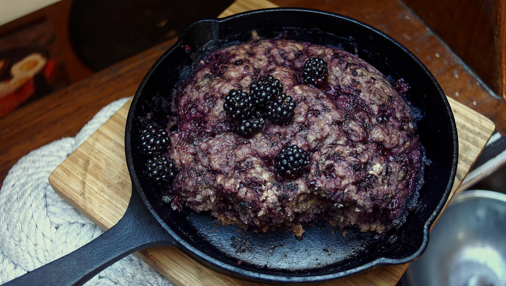

stovetop blackberry cake
20 pieces — 40 minutes
In British Columbia, we like to walk around to pick blackberries in the summer. There are blackberry bushes everywhere. We brought a bowl with us, and filled it up in one short hour! We made a cake with the berries that same night.
Substitutions:
Milk: Oat milk works well as a substitute.
Flour: You're welcome to use all purpose flour, or a mixture cut with spelt. We used 100% whole wheat because we're trying to get used to carrying one type of flour. The cake rose well.Oil: Can substitute for any other neutral oil, like sunflower and grapeseed. The fat in this recipe was already reduced, I don't recommend using less.
Fruit: This recipe works well with other berries, or fruit like banana, apples etc.
Haybox:
A haybox is a cooker that utilizes the heat of the food being cooked to complete the cooking process. Food items to be cooked are heated to boiling point, and then insulated.
After pan off the stove, we transfer it to a bin with clothing. We layer a dish cloth underneath and overtop, and then bury it with clothes, or a sleeping bag. The cast iron retains its heat well, and the layers of fabric help to retain it even further. It's a way to save fuel when cooking. We also like to use our pressure cooker to retain heat, but we can only ever do that when we use our cast iron pot (it fits inside, the pan doesn't). NOTE: Although, a half recipe works better than full, because it is more difficult to heat a thicker cake all the way through. As soon as we take it off the heat, we put it in the pressure cooker, add the lid and plug up the top. It stayed warm for an entire hour. In winter, these systems may not retain the heat as well, more insulation may be necessary.
If you prefer to bake this cake in the oven, see the instructions at the bottom of the recipe.
 soy milk60 ml
soy milk60 ml apple cider vinegar2.5 ml
apple cider vinegar2.5 ml whole wheat flour230 g
whole wheat flour230 g baking powder5 g
baking powder5 g baking soda1.25 g
baking soda1.25 g salt2.5 g
salt2.5 g canola oil60 ml
canola oil60 ml whole cane sugar100 g
whole cane sugar100 g blackberries300 g
blackberries300 g
cake
- Rinse black berries, set aside. Let them dry a little, so they don't add extra moisture to the cake.
- Mix 2.5 ml (1/2 tsp) of apple cider vinegar in 60 ml (1/4 cup) of soy milk, this will make the milk curdle.
- In a bowl, combine 230 g (2 cups) of wholewheat flour, 5 ml (1 tsp) of baking powder, 2.5 ml (1/2 tsp) of baking soda and 1.25 g (1/4 tsp) of salt. Mix well.
- In yet, another bowl, cream 60 ml (1/4 cup) of canola oil(or other neutral oil) with 100 g (1/2 cup) of whole cane sugar. Stir in 300 g (around 2 cups) of blackberries and the curdled soy milk mixture.
- Add the wet to the dry ingredients and stir until evenly mixed.
- Oil a large cast iron pan with vegetable oil, and preheat it until the pan is hot. We used two smaller 20 cm (7 in) pans, because our large pan doesn't have a lid. One large one is more efficient.
- Pour the batter into the pan, spread it in the pan using a spatula. Add cover, and lower the heat. Let cook for 15-20 minutes at low heat.
- I like to slow cook my cakes, so I transfer the pan to a haybox and leave it there for an hour. This works well with shallow pans, since there is more contact with the pan. A cake in a small narrow pot may not cook all the way through. See text above for notes. If you prefer to cook it in the oven, pour the batter into an oiled square baking pan, preheat oven to 180 °C (350 °F) and bake for 45 minutes.